Pangolin (Parts & Repairs)
Many components in your Pangolin can be upgraded or replaced as necessary. Follow these step-by-step guides for instructions:
- Removing the bottom cover
- Replacing the RAM
- Replacing an M.2/NVMe SSD
- Removing the battery
- Reseating the WiFi/Bluetooth antennas
- Replacing the CMOS battery
- Replacing the fans/heatsink/thermal paste
- Replacing the speakers
Removing the bottom cover:
Removing the cover is required to access the internal components. Prior to removing the cover, ensure the AC power is unplugged and all peripherals (including SD cards and USB drives) are unplugged or removed from the system.
Part numbers:
- The bottom panel’s part number is
02.SKD.NM16AHFTX02.
Tools required: Cross-head (Phillips) screwdriver
Time estimate: 5 minutes
Difficulty: Easy ●
Steps to remove the bottom cover:
- Place the machine lid-side down.
- Use a soft surface (such as a towel) to avoid scratches.
- Remove the 7 bottom panel screws.
- The back-center screw (highlighted red below) is longer than the rest of the screws.
- The front four screws are mounted at an angle into the machine; hold the screwdriver at an angle for the easiest removal/installation.
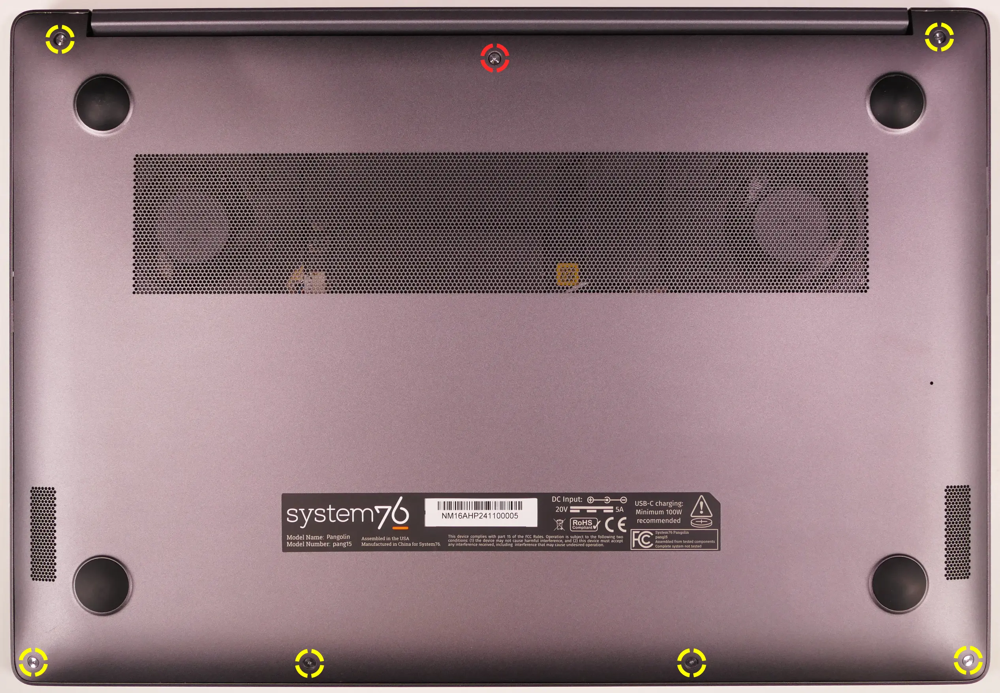
- Lift the bottom panel off, starting from the hinges in the back.
Replacing the RAM:
The Pangolin 15 supports up to 96GB (2x48GB) of DDR5 SO-DIMMs running at 5600MHz. If you’ve purchased new RAM, need to replace your RAM, or are reseating your RAM, follow these steps.
Tools required: Cross-head (Phillips) screwdriver
Time estimate: 10 minutes
Difficulty: Easy ●
Steps to replace the RAM:
- Follow the steps above to remove the bottom cover.
- Remove the black protective covers from the RAM slots, shown on the left below.
- Alternatively, you can pull the outer ends of the covers up and hold them away from the RAM sticks while replacing them instead of entirely removing the covers from the slots.
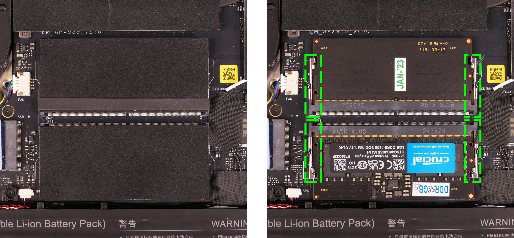
- Press the small tabs on both sides of the RAM simultaneously. The RAM should spring up to an angle.
- Remove the RAM from the slot.
- Insert the new RAM (or reseat the existing RAM) by placing it into the keyed slot and pressing down until it clicks into place.
Replacing an M.2/NVMe SSD:
This model supports two M.2 SSDs. Both slots support PCIe NVMe Generation 4 connections and M.2 size 2280.
Tools required: Cross-head (Phillips) screwdriver
Time estimate: 3 minutes
Difficulty: Easy ●
Steps to replace the M.2 drive:
- Follow the steps above to remove the bottom cover.
- Unscrew the retainer screw opposite the M.2 slot.
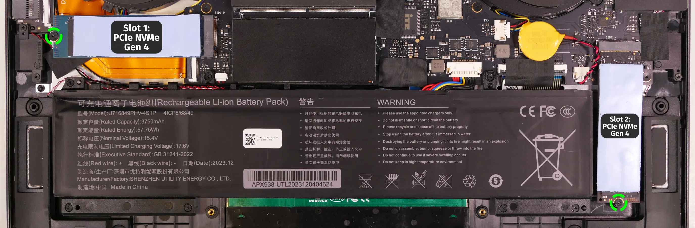
- Remove the existing M.2 drive by pulling it out of the slot.
- If replacing an M.2 drive, slowly peel the light blue thermal pad off of the old drive, then place it on the new drive.
- If you ordered less than two drives when purchasing your system, the additional thermal pad will be included in the box.
- M.2 thermal pads are optional, and drives can be used without thermal pads if the pads are lost or unable to be transferred. Without the thermal pad, performance may be throttled to avoid overheating.
- Insert the new M.2 drive into the slot and hold it in place.
- Replace the retainer screw.
Replacing the battery:
The battery provides primary power whenever the system is unplugged.
Part numbers:
- The battery’s model number is
U716849PHV-4S1P, and the original part number is4ICP8/68/49.- Third-party battery sellers may list one or both of these numbers, and may offer other compatible part numbers with the same model number.
- You can also contact System76 to purchase a replacement battery.
Tools required: Cross-head (Phillips) screwdriver
Time estimate: 10 minutes
Difficulty: Easy ●
Steps to replace the battery:
- Follow the steps above to remove the bottom cover.
- Remove the seven battery screws, highlighted cyan below.
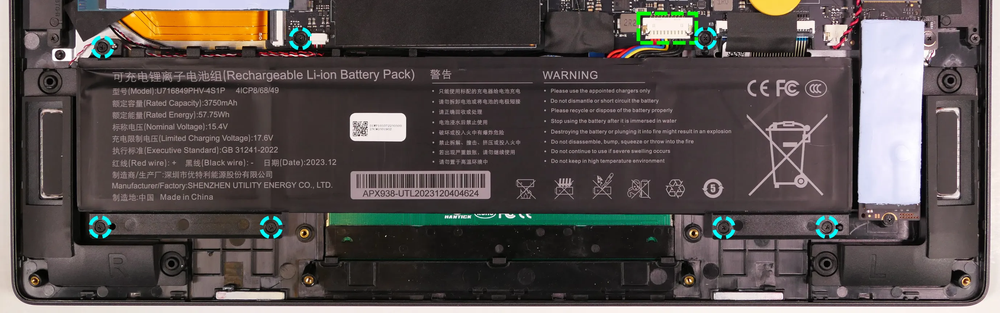
- Unplug the battery connector (highlighted green above) and lift the battery out of the chassis.
- Wires may be routed through the hooks on the left side of the battery. Free the wires, and push them back into the hooks when installing the battery again.
- When plugging in the battery, the red wires go on the left, and the black wires go on the right.
Reseating the wireless antenna connectors:
Your Pangolin’s WiFi and Bluetooth are both handled by the same module, which is soldered to the Pangolin motherboard. If you are experiencing wireless connectivity issues and would like to reseat the wireless antenna connectors, you can do so using the instructions below.
Part numbers:
- The built-in wireless card is an AzureWave
AW-XM514NF.- The wireless card chipset is a MediaTek
MT7922A12L.
- The wireless card chipset is a MediaTek
- The motherboard’s model number is
EM_APX938_V2.0.
Tools required: Cross-head (Phillips) screwdriver
Time estimate: 12 minutes
Difficulty: Medium ●
Steps to replace the WiFi/Bluetooth module:
- Follow the steps above to remove the bottom cover.
- Locate the wireless module. Remove the clear cover securing the wires and card (shown on the left below).
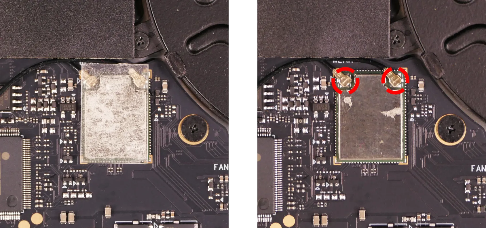
- Gently remove the two antennas (highlighted red above) by pulling them up and away from the wireless card.
- Re-attach the two antennas by aligning the circular fittings and pressing onto the wireless card. The connectors will snap into place. Use caution when attaching the connectors; the pins can bend, break, or snap.
Replacing the CMOS battery:
The CMOS battery supplies power to the system’s CMOS chip. UEFI settings and the computer’s hardware clock are stored on the CMOS. If your system doesn’t boot, you can reset the CMOS to force a low-level hardware reset. If your clock is constantly resetting, it’s likely your CMOS battery needs to be replaced.
Warning (ingestion hazard): Keep batteries out of reach of children. Death or serious injury can occur if ingested. If a battery is suspected to be swallowed or inserted inside any part of the body, seek immediate medical attention. In the US, you can also call the National Battery Ingestion Hotline for guidance: 1 (800) 498-8666
Part numbers:
- The CMOS battery is a standard 3V CR2032 battery. The stock battery is Malak brand.
Tools required: Cross-head (Phillips) screwdriver
Time estimate: 10 minutes
Difficulty: Medium ●
Steps to replace the CMOS battery:
- Follow the steps above to remove the bottom cover.
- Unplug the white connector attaching the CMOS battery to the motherboard (highlighted cyan below.)
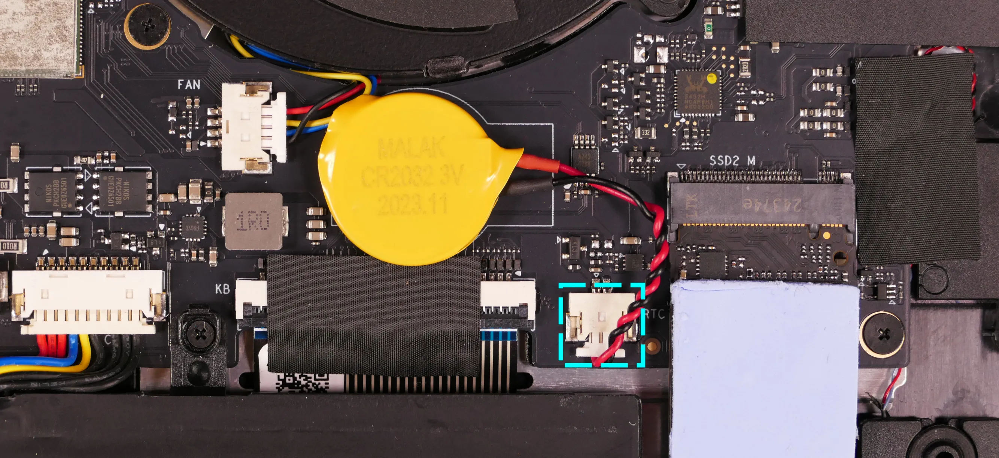
- If you are replacing the CMOS battery, carefully peel it away from the adhesive holding it to the chassis.
- To clear the CMOS, disconnect the main battery, open the lid of the machine, and hold down the power button for at least 15 seconds to discharge any residual energy in the system.
- Re-connect the CMOS battery and the main battery, and replace the bottom panel.
- When connecting the CMOS battery, the red wire goes on the left, and the black wire goes on the right.
- Power up the machine. The system may power itself off and on after initial boot; this is normal behavior when the CMOS has been reset.
Replacing the cooling system:
The Pangolin 15 has a fan and heatsink assembly to cool the CPU. The fans and heatsink are held together with adhesive; it is possible to replace the fans individually, but removing the entire assembly is recommended to perform service.
If the fan becomes noisy and cleaning it out doesn’t fix the issue, you may need a new fan. Contact support to start a warranty claim or parts purchase.
Depending on your climate and the age of the machine, it may be necessary to apply new thermal paste between the CPU and the heatsink. Thermal paste helps facilitate effective heat transfer between the CPU and the cooling equipment.
Part numbers:
- The heatsink’s part number is
01.WW7.APX938ARM00. - The left fan is a Joray
BF070E12P (S-0592), and its part number is01.SS9.APX938DTH00. - The right fan is a Joray
BF080D12P (S-0593), and its part number is01.SS9.APX938DTH01.
Tools required: Cross-head (Phillips) screwdriver, thermal paste
Time estimate: 20 minutes
Difficulty: High ●
Steps to replace the fan/heatsink/thermal paste:
- Follow the steps above to remove the bottom cover.
- Slowly peel off the black coverings and their connecting strip from the heatsink, highlighted green below.
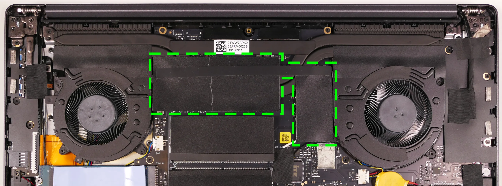
- Remove the six fan screws, highlighted green below.
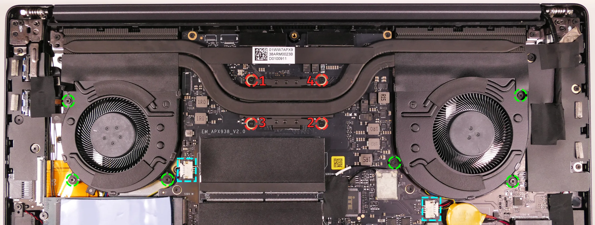
- Unplug the fan connectors, highlighted cyan above.
- Unscrew the four heatsink screws, highlighted red above.
- The heatsink screws are held captive and will not come out of the heatsink.
- Remove the fan and heatsink assembly from the system, being careful not to bend the heatsink pipe. It may take some pressure to break the seal of the thermal paste.
- The fans are held onto the heatsink with adhesive strips on both the top and bottom; if they come loose, place them back into position between the strips before reinstalling the fan/heatsink assembly.
- Using a paper towel, remove the existing silver thermal paste. You may also use a small amount of rubbing alcohol if the old paste is dried or difficult to remove.
- The pink thermal pads do not need to be removed.
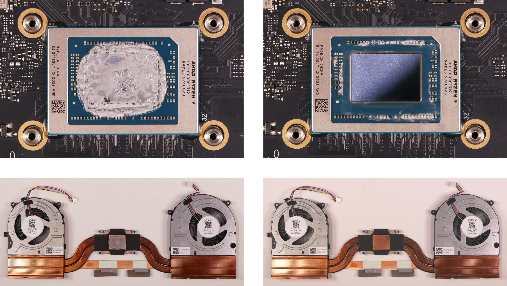
- After cleaning the CPU and heatsink, apply a small line of thermal paste directly onto the CPU chip.
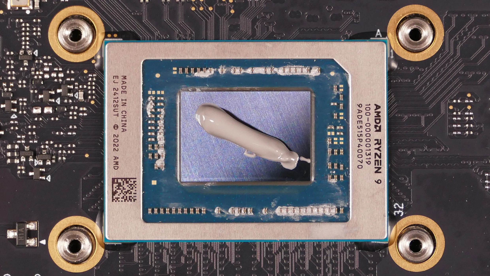
- Carefully replace the heatsink.
- Tighten the four heatsink screws.
- Replace the fan screws, plug in the fan connectors, stick the black coverings back onto the heatsink pipes, and replace the bottom panel.
Replacing the speakers:
The system has four speakers (two top-firing tweeters and two bottom-firing woofers). The left and right channels can be replaced independently.
Part numbers:
- Left speakers (right side of machine when viewing from below):
- Tweeter:
GS-NM16TG-L - Woofer:
GS-NM16TG-L-2
- Tweeter:
- Right speakers (left side of machine when viewing from below):
- Tweeter:
GS-NM16TG-R - Woofer:
GS-NM16TG-R-2
- Tweeter:
Tools required: Cross-head (Phillips) screwdriver
Time estimate: 10 minutes
Difficulty: Medium ●
Steps to replace the right speakers:
- Follow the steps above to remove the bottom cover.
- Unplug the
SPK1connector, highlighted cyan below.- Peel back any black tape covering the wires stemming from this connector.
- This can alternatively be done after freeing the speakers.
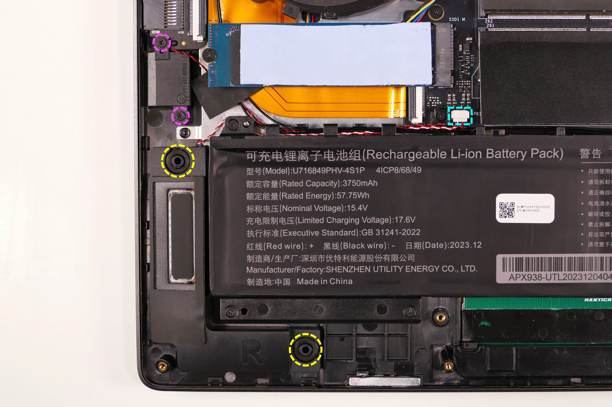
- Unscrew the right tweeter screws, highlighted pink above.
- Pull the right woofer off of the plastic mounting posts (highlighted yellow above), then lift the speakers out of the machine.
- The woofer wire is not routed underneath the battery by default, but may become routed underneath the battery after the battery is replaced. If this is the case, it may be necessary to remove the battery before removing the right woofer.
- Slide the new woofer onto the plastic posts, screw the new tweeter in, and connect the
SPK1connector. - Replace the black tape and bottom panel.
Steps to replace the left speakers:
- Follow the steps above to remove the bottom cover.
- Remove the black tape (highlighted green below) covering the
SPK2connector and the left tweeter.
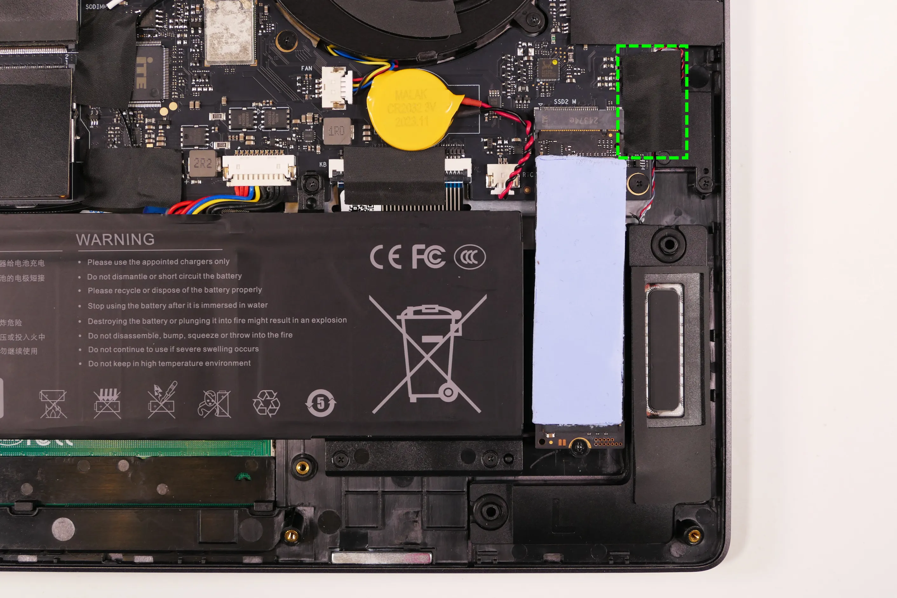
- Disconnect the
SPK2connector from the motherboard, highlighted cyan below.- This can alternatively be done after freeing the speakers.
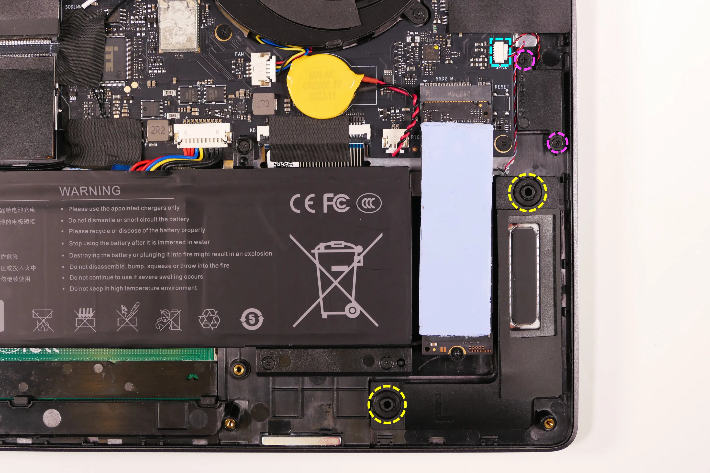
- Unscrew the left tweeter screws, highlighted pink above.
- Pull the left woofer off of the plastic mounting posts (highlighted yellow above), then lift the speakers out of the machine.
- Slide the new woofer onto the plastic posts, screw the new tweeter in, and connect the
SPK2connector. - Replace the black tape and bottom panel.